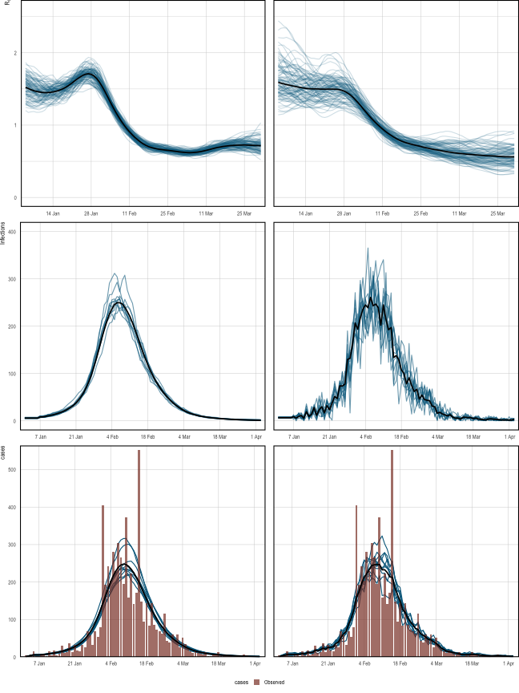

Our first example infers \(R_t\) during the H1N1 pandemic in Baltimore in 1918, using only case counts and a serial interval. This is, relatively speaking, a simple setting for several reasons. Only a single population (that of Baltimore) and observational model (case data) are considered. \(R_t\) will follow a daily random walk with no additional covariates. Of course, epidemia is capable of more complex modeling, and other articles take a step in this direction.
In addition to inferring \(R_t\), this example demonstrates how to undertake posterior predictive checks to graphically assess model fit. The basic model outlined above is then extended to add variation to the infection process, as was outlined in the model description. This is particularly useful for this example because infection counts are low. We will also see that the extended model appears to have a computational advantage in this setting.
First use the following command, which ensures parallel execution if multiple cores are available.
options(mc.cores = parallel::detectCores())The case data is provided by the R package EpiEstim.
## $incidence
## [1] 5 1 6 15 2 3 8 7 2 15 4 17 4 10 31 11 13 36 13
## [20] 33 17 15 32 27 70 58 32 69 54 80 405 192 243 204 280 229 304 265
## [39] 196 372 158 222 141 172 553 148 95 144 85 143 87 73 70 62 116 44 38
## [58] 60 45 60 27 51 34 22 16 11 18 11 10 8 13 3 3 6 6 13
## [77] 5 6 6 5 5 1 2 2 3 8 4 1 2 3 1 0
##
## $si_distr
## [1] 0.000 0.233 0.359 0.198 0.103 0.053 0.027 0.014 0.007 0.003 0.002 0.001First form the dataargument, which will eventually be passed to the
model fitting function epim(). Recall that this must be a data frame
containing all observations and covariates used to fit the model. Therefore,
we require a column giving cases over time. In this
example, no covariates are required. \(R_t\) follows a daily random walk,
with no additional covariates. In addition, the case ascertainment rate
will be assumed at 100%, and so no covariates are used for this model either.
date <- as.Date("1918-01-01") + seq(0, along.with = c(NA, Flu1918$incidence))
data <- data.frame(city = "Baltimore", cases = c(NA, Flu1918$incidence),
date = date)The variable datehas been constructed so that the first cases
are seen on the second day of the epidemic rather than the first.
This ensures that the first observation can be explained by past infections.
Recall that we wish to model \(R_t\) by a daily random walk. This is
specified by a call to epirt(). The
formulaargument defines the linear predictor which
is then transformed by the link function. A random walk can be
added to the predictor using the rw() function. This has an optional
time argument which allows the random walk increments to occur at
a different frequency to the date column. This can be employed, for
example, to define a weekly random walk. If unspecified, the increments are
daily. The increments are modeled as half-normal with a scale hyperparameter.
The value of this is set using the prior_scale argument. This is used
in the snippet below.
rt <- epirt(formula = R(city, date) ~ 1 + rw(prior_scale = 0.01),
prior_intercept = normal(log(2), 0.2), link = 'log')The prior on the intercept gives the initial reproduction number \(R_0\) a prior mean of roughly 2.
Multiple observational models can
be collected into a list and passed to epim() as the obs
argument. In this case, only case data is used and so there is only one
such model.
For the purpose of this exercise, we have assumed that all infections will
eventually manifest as a case. The above snippet implies
ascertainment, i.e. \(\alpha_t = 1\) for all \(t\). This is achieved using
offset(), which allows vectors to be added to the linear predictor
without multiplication by an unknown parameter.
The i2o argument implies
that cases are recorded with equal probability in any of the four days after
infection.
Two infection models are considered. The first uses the renewal equation to propagate infections. The extended model
adds variance to this process, and can be applied by using latent = TRUE
in the call to epiinf().
inf <- epiinf(gen = Flu1918$si_distr)
inf_ext <- epiinf(gen = Flu1918$si_distr, latent = TRUE,
prior_aux = normal(10,2))The argument gen takes a discrete generation distribution. Here we have
used the serial interval provided by EpiEstim. This makes the implicit assumption that the serial interval approximates the
generation time. prior_aux sets
the prior on the coefficient of dispersion \(d\). This prior assumes that
infections have conditional variance around 10 times the conditional mean.
We are left to collect all remaining arguments required for epim(). This
is done as follows.
args <- list(rt = rt, obs = obs, inf = inf, data = data, iter = 2e3,
seed = 12345,
control = list(max_treedepth = 12, adapt_delta = 0.95))
args_ext <- args; args_ext$inf <- inf_extThe arguments iter and seed set the number of MCMC iterations
and seeds respectively, and are passed directly on to the $sample()
method of the cmdstanr model. The random-walk parameterisation of
\(R_t\) gives a posterior geometry that the sampler explores more reliably
with a slightly larger max_treedepth and adapt_delta; these are passed
through control (mirroring the rstan interface) and forwarded to the
sampler.
We wrap the calls to epim() in system.time in order to assess
the computational cost of fitting the models. The snippet below fits both
versions of the model. fm1 and fm2are the fitted basic model
and extended model respectively.
system.time(fm1 <- do.call(epim, args))## Running MCMC with 4 parallel chains...
##
## Chain 1 Iteration: 1 / 2000 [ 0%] (Warmup)## Chain 1 Informational Message: The current Metropolis proposal is about to be rejected because of the following issue:## Chain 1 Exception: epidemia_base_model_namespace::log_prob: Rt_unadj[91, 1] is nan, but must be greater than or equal to 0.000000 (in '/private/var/folders/3b/9h2hhrtd6m10021mpjqtv6s40000gn/T/Rtmpf2BxUF/fileef2b1cce14ef/epidemia.Rcheck/epidemia/stan//tparameters/infections_rt.stan', line 1, column 0, included from## Chain 1 '/var/folders/3b/9h2hhrtd6m10021mpjqtv6s40000gn/T/RtmpuavdXd/working_dir/RtmpHVQBbh/model-f10cc34bc35.stan', line 62, column 0)## Chain 1 If this warning occurs sporadically, such as for highly constrained variable types like covariance matrices, then the sampler is fine,## Chain 1 but if this warning occurs often then your model may be either severely ill-conditioned or misspecified.## Chain 1## Chain 2 Iteration: 1 / 2000 [ 0%] (Warmup)## Chain 2 Informational Message: The current Metropolis proposal is about to be rejected because of the following issue:## Chain 2 Exception: epidemia_base_model_namespace::log_prob: Rt_unadj[91, 1] is nan, but must be greater than or equal to 0.000000 (in '/private/var/folders/3b/9h2hhrtd6m10021mpjqtv6s40000gn/T/Rtmpf2BxUF/fileef2b1cce14ef/epidemia.Rcheck/epidemia/stan//tparameters/infections_rt.stan', line 1, column 0, included from## Chain 2 '/var/folders/3b/9h2hhrtd6m10021mpjqtv6s40000gn/T/RtmpuavdXd/working_dir/RtmpHVQBbh/model-f10cc34bc35.stan', line 62, column 0)## Chain 2 If this warning occurs sporadically, such as for highly constrained variable types like covariance matrices, then the sampler is fine,## Chain 2 but if this warning occurs often then your model may be either severely ill-conditioned or misspecified.## Chain 2## Chain 3 Iteration: 1 / 2000 [ 0%] (Warmup)## Chain 3 Informational Message: The current Metropolis proposal is about to be rejected because of the following issue:## Chain 3 Exception: epidemia_base_model_namespace::log_prob: Rt_unadj[88, 1] is nan, but must be greater than or equal to 0.000000 (in '/private/var/folders/3b/9h2hhrtd6m10021mpjqtv6s40000gn/T/Rtmpf2BxUF/fileef2b1cce14ef/epidemia.Rcheck/epidemia/stan//tparameters/infections_rt.stan', line 1, column 0, included from## Chain 3 '/var/folders/3b/9h2hhrtd6m10021mpjqtv6s40000gn/T/RtmpuavdXd/working_dir/RtmpHVQBbh/model-f10cc34bc35.stan', line 62, column 0)## Chain 3 If this warning occurs sporadically, such as for highly constrained variable types like covariance matrices, then the sampler is fine,## Chain 3 but if this warning occurs often then your model may be either severely ill-conditioned or misspecified.## Chain 3## Chain 4 Iteration: 1 / 2000 [ 0%] (Warmup)## Chain 4 Informational Message: The current Metropolis proposal is about to be rejected because of the following issue:## Chain 4 Exception: epidemia_base_model_namespace::log_prob: Rt_unadj[91, 1] is nan, but must be greater than or equal to 0.000000 (in '/private/var/folders/3b/9h2hhrtd6m10021mpjqtv6s40000gn/T/Rtmpf2BxUF/fileef2b1cce14ef/epidemia.Rcheck/epidemia/stan//tparameters/infections_rt.stan', line 1, column 0, included from## Chain 4 '/var/folders/3b/9h2hhrtd6m10021mpjqtv6s40000gn/T/RtmpuavdXd/working_dir/RtmpHVQBbh/model-f10cc34bc35.stan', line 62, column 0)## Chain 4 If this warning occurs sporadically, such as for highly constrained variable types like covariance matrices, then the sampler is fine,## Chain 4 but if this warning occurs often then your model may be either severely ill-conditioned or misspecified.## Chain 4## Chain 4 Iteration: 100 / 2000 [ 5%] (Warmup)
## Chain 2 Iteration: 100 / 2000 [ 5%] (Warmup)
## Chain 3 Iteration: 100 / 2000 [ 5%] (Warmup)
## Chain 1 Iteration: 100 / 2000 [ 5%] (Warmup)
## Chain 4 Iteration: 200 / 2000 [ 10%] (Warmup)
## Chain 2 Iteration: 200 / 2000 [ 10%] (Warmup)
## Chain 1 Iteration: 200 / 2000 [ 10%] (Warmup)
## Chain 3 Iteration: 200 / 2000 [ 10%] (Warmup)
## Chain 4 Iteration: 300 / 2000 [ 15%] (Warmup)
## Chain 1 Iteration: 300 / 2000 [ 15%] (Warmup)
## Chain 2 Iteration: 300 / 2000 [ 15%] (Warmup)
## Chain 3 Iteration: 300 / 2000 [ 15%] (Warmup)
## Chain 4 Iteration: 400 / 2000 [ 20%] (Warmup)
## Chain 2 Iteration: 400 / 2000 [ 20%] (Warmup)
## Chain 1 Iteration: 400 / 2000 [ 20%] (Warmup)
## Chain 3 Iteration: 400 / 2000 [ 20%] (Warmup)
## Chain 3 Iteration: 500 / 2000 [ 25%] (Warmup)
## Chain 1 Iteration: 500 / 2000 [ 25%] (Warmup)
## Chain 4 Iteration: 500 / 2000 [ 25%] (Warmup)
## Chain 2 Iteration: 500 / 2000 [ 25%] (Warmup)
## Chain 1 Iteration: 600 / 2000 [ 30%] (Warmup)
## Chain 3 Iteration: 600 / 2000 [ 30%] (Warmup)
## Chain 4 Iteration: 600 / 2000 [ 30%] (Warmup)
## Chain 2 Iteration: 600 / 2000 [ 30%] (Warmup)
## Chain 1 Iteration: 700 / 2000 [ 35%] (Warmup)
## Chain 4 Iteration: 700 / 2000 [ 35%] (Warmup)
## Chain 2 Iteration: 700 / 2000 [ 35%] (Warmup)
## Chain 3 Iteration: 700 / 2000 [ 35%] (Warmup)
## Chain 1 Iteration: 800 / 2000 [ 40%] (Warmup)
## Chain 2 Iteration: 800 / 2000 [ 40%] (Warmup)
## Chain 3 Iteration: 800 / 2000 [ 40%] (Warmup)
## Chain 4 Iteration: 800 / 2000 [ 40%] (Warmup)
## Chain 1 Iteration: 900 / 2000 [ 45%] (Warmup)
## Chain 2 Iteration: 900 / 2000 [ 45%] (Warmup)
## Chain 3 Iteration: 900 / 2000 [ 45%] (Warmup)
## Chain 4 Iteration: 900 / 2000 [ 45%] (Warmup)
## Chain 3 Iteration: 1000 / 2000 [ 50%] (Warmup)
## Chain 3 Iteration: 1001 / 2000 [ 50%] (Sampling)
## Chain 1 Iteration: 1000 / 2000 [ 50%] (Warmup)
## Chain 2 Iteration: 1000 / 2000 [ 50%] (Warmup)
## Chain 1 Iteration: 1001 / 2000 [ 50%] (Sampling)
## Chain 2 Iteration: 1001 / 2000 [ 50%] (Sampling)
## Chain 4 Iteration: 1000 / 2000 [ 50%] (Warmup)
## Chain 4 Iteration: 1001 / 2000 [ 50%] (Sampling)
## Chain 3 Iteration: 1100 / 2000 [ 55%] (Sampling)
## Chain 1 Iteration: 1100 / 2000 [ 55%] (Sampling)
## Chain 2 Iteration: 1100 / 2000 [ 55%] (Sampling)
## Chain 4 Iteration: 1100 / 2000 [ 55%] (Sampling)
## Chain 3 Iteration: 1200 / 2000 [ 60%] (Sampling)
## Chain 2 Iteration: 1200 / 2000 [ 60%] (Sampling)
## Chain 1 Iteration: 1200 / 2000 [ 60%] (Sampling)
## Chain 4 Iteration: 1200 / 2000 [ 60%] (Sampling)
## Chain 3 Iteration: 1300 / 2000 [ 65%] (Sampling)
## Chain 2 Iteration: 1300 / 2000 [ 65%] (Sampling)
## Chain 1 Iteration: 1300 / 2000 [ 65%] (Sampling)
## Chain 4 Iteration: 1300 / 2000 [ 65%] (Sampling)
## Chain 3 Iteration: 1400 / 2000 [ 70%] (Sampling)
## Chain 2 Iteration: 1400 / 2000 [ 70%] (Sampling)
## Chain 4 Iteration: 1400 / 2000 [ 70%] (Sampling)
## Chain 1 Iteration: 1400 / 2000 [ 70%] (Sampling)
## Chain 3 Iteration: 1500 / 2000 [ 75%] (Sampling)
## Chain 2 Iteration: 1500 / 2000 [ 75%] (Sampling)
## Chain 4 Iteration: 1500 / 2000 [ 75%] (Sampling)
## Chain 1 Iteration: 1500 / 2000 [ 75%] (Sampling)
## Chain 3 Iteration: 1600 / 2000 [ 80%] (Sampling)
## Chain 2 Iteration: 1600 / 2000 [ 80%] (Sampling)
## Chain 4 Iteration: 1600 / 2000 [ 80%] (Sampling)
## Chain 1 Iteration: 1600 / 2000 [ 80%] (Sampling)
## Chain 3 Iteration: 1700 / 2000 [ 85%] (Sampling)
## Chain 2 Iteration: 1700 / 2000 [ 85%] (Sampling)
## Chain 1 Iteration: 1700 / 2000 [ 85%] (Sampling)
## Chain 4 Iteration: 1700 / 2000 [ 85%] (Sampling)
## Chain 3 Iteration: 1800 / 2000 [ 90%] (Sampling)
## Chain 2 Iteration: 1800 / 2000 [ 90%] (Sampling)
## Chain 4 Iteration: 1800 / 2000 [ 90%] (Sampling)
## Chain 1 Iteration: 1800 / 2000 [ 90%] (Sampling)
## Chain 3 Iteration: 1900 / 2000 [ 95%] (Sampling)
## Chain 2 Iteration: 1900 / 2000 [ 95%] (Sampling)
## Chain 4 Iteration: 1900 / 2000 [ 95%] (Sampling)
## Chain 1 Iteration: 1900 / 2000 [ 95%] (Sampling)
## Chain 3 Iteration: 2000 / 2000 [100%] (Sampling)
## Chain 3 finished in 37.9 seconds.
## Chain 4 Iteration: 2000 / 2000 [100%] (Sampling)
## Chain 4 finished in 38.3 seconds.
## Chain 1 Iteration: 2000 / 2000 [100%] (Sampling)
## Chain 2 Iteration: 2000 / 2000 [100%] (Sampling)
## Chain 2 finished in 38.5 seconds.
## Chain 1 finished in 38.5 seconds.
##
## All 4 chains finished successfully.
## Mean chain execution time: 38.3 seconds.
## Total execution time: 38.7 seconds.## user system elapsed
## 148.508 1.144 40.954
system.time(fm2 <- do.call(epim, args_ext))## Running MCMC with 4 parallel chains...
##
## Chain 1 Iteration: 1 / 2000 [ 0%] (Warmup)## Chain 1 Informational Message: The current Metropolis proposal is about to be rejected because of the following issue:## Chain 1 Exception: epidemia_base_model_namespace::log_prob: load[13, 1] is nan, but must be greater than or equal to 0.000000 (in '/private/var/folders/3b/9h2hhrtd6m10021mpjqtv6s40000gn/T/Rtmpf2BxUF/fileef2b1cce14ef/epidemia.Rcheck/epidemia/stan//tparameters/infections_rt.stan', line 2, column 0, included from## Chain 1 '/var/folders/3b/9h2hhrtd6m10021mpjqtv6s40000gn/T/RtmpuavdXd/working_dir/RtmpHVQBbh/model-f10cc34bc35.stan', line 62, column 0)## Chain 1 If this warning occurs sporadically, such as for highly constrained variable types like covariance matrices, then the sampler is fine,## Chain 1 but if this warning occurs often then your model may be either severely ill-conditioned or misspecified.## Chain 1## Chain 2 Iteration: 1 / 2000 [ 0%] (Warmup)## Chain 2 Informational Message: The current Metropolis proposal is about to be rejected because of the following issue:## Chain 2 Exception: epidemia_base_model_namespace::log_prob: load[13, 1] is nan, but must be greater than or equal to 0.000000 (in '/private/var/folders/3b/9h2hhrtd6m10021mpjqtv6s40000gn/T/Rtmpf2BxUF/fileef2b1cce14ef/epidemia.Rcheck/epidemia/stan//tparameters/infections_rt.stan', line 2, column 0, included from## Chain 2 '/var/folders/3b/9h2hhrtd6m10021mpjqtv6s40000gn/T/RtmpuavdXd/working_dir/RtmpHVQBbh/model-f10cc34bc35.stan', line 62, column 0)## Chain 2 If this warning occurs sporadically, such as for highly constrained variable types like covariance matrices, then the sampler is fine,## Chain 2 but if this warning occurs often then your model may be either severely ill-conditioned or misspecified.## Chain 2## Chain 3 Iteration: 1 / 2000 [ 0%] (Warmup)## Chain 3 Informational Message: The current Metropolis proposal is about to be rejected because of the following issue:## Chain 3 Exception: epidemia_base_model_namespace::log_prob: load[18, 1] is nan, but must be greater than or equal to 0.000000 (in '/private/var/folders/3b/9h2hhrtd6m10021mpjqtv6s40000gn/T/Rtmpf2BxUF/fileef2b1cce14ef/epidemia.Rcheck/epidemia/stan//tparameters/infections_rt.stan', line 2, column 0, included from## Chain 3 '/var/folders/3b/9h2hhrtd6m10021mpjqtv6s40000gn/T/RtmpuavdXd/working_dir/RtmpHVQBbh/model-f10cc34bc35.stan', line 62, column 0)## Chain 3 If this warning occurs sporadically, such as for highly constrained variable types like covariance matrices, then the sampler is fine,## Chain 3 but if this warning occurs often then your model may be either severely ill-conditioned or misspecified.## Chain 3## Chain 4 Iteration: 1 / 2000 [ 0%] (Warmup)## Chain 4 Informational Message: The current Metropolis proposal is about to be rejected because of the following issue:## Chain 4 Exception: epidemia_base_model_namespace::log_prob: load[13, 1] is nan, but must be greater than or equal to 0.000000 (in '/private/var/folders/3b/9h2hhrtd6m10021mpjqtv6s40000gn/T/Rtmpf2BxUF/fileef2b1cce14ef/epidemia.Rcheck/epidemia/stan//tparameters/infections_rt.stan', line 2, column 0, included from## Chain 4 '/var/folders/3b/9h2hhrtd6m10021mpjqtv6s40000gn/T/RtmpuavdXd/working_dir/RtmpHVQBbh/model-f10cc34bc35.stan', line 62, column 0)## Chain 4 If this warning occurs sporadically, such as for highly constrained variable types like covariance matrices, then the sampler is fine,## Chain 4 but if this warning occurs often then your model may be either severely ill-conditioned or misspecified.## Chain 4## Chain 1 Iteration: 100 / 2000 [ 5%] (Warmup)
## Chain 3 Iteration: 100 / 2000 [ 5%] (Warmup)
## Chain 2 Iteration: 100 / 2000 [ 5%] (Warmup)
## Chain 1 Iteration: 200 / 2000 [ 10%] (Warmup)
## Chain 4 Iteration: 100 / 2000 [ 5%] (Warmup)
## Chain 3 Iteration: 200 / 2000 [ 10%] (Warmup)
## Chain 2 Iteration: 200 / 2000 [ 10%] (Warmup)
## Chain 1 Iteration: 300 / 2000 [ 15%] (Warmup)
## Chain 3 Iteration: 300 / 2000 [ 15%] (Warmup)
## Chain 4 Iteration: 200 / 2000 [ 10%] (Warmup)
## Chain 2 Iteration: 300 / 2000 [ 15%] (Warmup)
## Chain 1 Iteration: 400 / 2000 [ 20%] (Warmup)
## Chain 3 Iteration: 400 / 2000 [ 20%] (Warmup)
## Chain 4 Iteration: 300 / 2000 [ 15%] (Warmup)
## Chain 1 Iteration: 500 / 2000 [ 25%] (Warmup)
## Chain 2 Iteration: 400 / 2000 [ 20%] (Warmup)
## Chain 3 Iteration: 500 / 2000 [ 25%] (Warmup)
## Chain 4 Iteration: 400 / 2000 [ 20%] (Warmup)
## Chain 1 Iteration: 600 / 2000 [ 30%] (Warmup)
## Chain 2 Iteration: 500 / 2000 [ 25%] (Warmup)
## Chain 3 Iteration: 600 / 2000 [ 30%] (Warmup)
## Chain 4 Iteration: 500 / 2000 [ 25%] (Warmup)
## Chain 1 Iteration: 700 / 2000 [ 35%] (Warmup)
## Chain 2 Iteration: 600 / 2000 [ 30%] (Warmup)
## Chain 3 Iteration: 700 / 2000 [ 35%] (Warmup)
## Chain 4 Iteration: 600 / 2000 [ 30%] (Warmup)
## Chain 1 Iteration: 800 / 2000 [ 40%] (Warmup)
## Chain 2 Iteration: 700 / 2000 [ 35%] (Warmup)
## Chain 3 Iteration: 800 / 2000 [ 40%] (Warmup)
## Chain 4 Iteration: 700 / 2000 [ 35%] (Warmup)
## Chain 1 Iteration: 900 / 2000 [ 45%] (Warmup)
## Chain 3 Iteration: 900 / 2000 [ 45%] (Warmup)
## Chain 2 Iteration: 800 / 2000 [ 40%] (Warmup)
## Chain 4 Iteration: 800 / 2000 [ 40%] (Warmup)
## Chain 1 Iteration: 1000 / 2000 [ 50%] (Warmup)
## Chain 1 Iteration: 1001 / 2000 [ 50%] (Sampling)
## Chain 3 Iteration: 1000 / 2000 [ 50%] (Warmup)
## Chain 3 Iteration: 1001 / 2000 [ 50%] (Sampling)
## Chain 2 Iteration: 900 / 2000 [ 45%] (Warmup)
## Chain 4 Iteration: 900 / 2000 [ 45%] (Warmup)
## Chain 3 Iteration: 1100 / 2000 [ 55%] (Sampling)
## Chain 1 Iteration: 1100 / 2000 [ 55%] (Sampling)
## Chain 2 Iteration: 1000 / 2000 [ 50%] (Warmup)
## Chain 2 Iteration: 1001 / 2000 [ 50%] (Sampling)
## Chain 3 Iteration: 1200 / 2000 [ 60%] (Sampling)
## Chain 4 Iteration: 1000 / 2000 [ 50%] (Warmup)
## Chain 4 Iteration: 1001 / 2000 [ 50%] (Sampling)
## Chain 1 Iteration: 1200 / 2000 [ 60%] (Sampling)
## Chain 3 Iteration: 1300 / 2000 [ 65%] (Sampling)
## Chain 2 Iteration: 1100 / 2000 [ 55%] (Sampling)
## Chain 4 Iteration: 1100 / 2000 [ 55%] (Sampling)
## Chain 3 Iteration: 1400 / 2000 [ 70%] (Sampling)
## Chain 4 Iteration: 1200 / 2000 [ 60%] (Sampling)
## Chain 1 Iteration: 1300 / 2000 [ 65%] (Sampling)
## Chain 2 Iteration: 1200 / 2000 [ 60%] (Sampling)
## Chain 3 Iteration: 1500 / 2000 [ 75%] (Sampling)
## Chain 3 Iteration: 1600 / 2000 [ 80%] (Sampling)
## Chain 2 Iteration: 1300 / 2000 [ 65%] (Sampling)
## Chain 4 Iteration: 1300 / 2000 [ 65%] (Sampling)
## Chain 1 Iteration: 1400 / 2000 [ 70%] (Sampling)
## Chain 3 Iteration: 1700 / 2000 [ 85%] (Sampling)
## Chain 4 Iteration: 1400 / 2000 [ 70%] (Sampling)
## Chain 2 Iteration: 1400 / 2000 [ 70%] (Sampling)
## Chain 3 Iteration: 1800 / 2000 [ 90%] (Sampling)
## Chain 1 Iteration: 1500 / 2000 [ 75%] (Sampling)
## Chain 3 Iteration: 1900 / 2000 [ 95%] (Sampling)
## Chain 4 Iteration: 1500 / 2000 [ 75%] (Sampling)
## Chain 2 Iteration: 1500 / 2000 [ 75%] (Sampling)
## Chain 1 Iteration: 1600 / 2000 [ 80%] (Sampling)
## Chain 3 Iteration: 2000 / 2000 [100%] (Sampling)
## Chain 3 finished in 4.4 seconds.
## Chain 2 Iteration: 1600 / 2000 [ 80%] (Sampling)
## Chain 4 Iteration: 1600 / 2000 [ 80%] (Sampling)
## Chain 1 Iteration: 1700 / 2000 [ 85%] (Sampling)
## Chain 4 Iteration: 1700 / 2000 [ 85%] (Sampling)
## Chain 2 Iteration: 1700 / 2000 [ 85%] (Sampling)
## Chain 1 Iteration: 1800 / 2000 [ 90%] (Sampling)
## Chain 4 Iteration: 1800 / 2000 [ 90%] (Sampling)
## Chain 2 Iteration: 1800 / 2000 [ 90%] (Sampling)
## Chain 1 Iteration: 1900 / 2000 [ 95%] (Sampling)
## Chain 4 Iteration: 1900 / 2000 [ 95%] (Sampling)
## Chain 2 Iteration: 1900 / 2000 [ 95%] (Sampling)
## Chain 4 Iteration: 2000 / 2000 [100%] (Sampling)
## Chain 4 finished in 5.4 seconds.
## Chain 1 Iteration: 2000 / 2000 [100%] (Sampling)
## Chain 1 finished in 5.6 seconds.
## Chain 2 Iteration: 2000 / 2000 [100%] (Sampling)
## Chain 2 finished in 5.7 seconds.
##
## All 4 chains finished successfully.
## Mean chain execution time: 5.3 seconds.
## Total execution time: 5.8 seconds.## user system elapsed
## 22.078 0.620 8.249Note the stark difference in running time. The extended model appears to fit faster even though there are \(87\) additional parameters being sampled (daily infections after the seeding period, and the coefficient of dispersion). We conjecture that the additional variance around infections adds slack to the model, and leads to a posterior distribution that is easier to sample.
The results of both models are shown in Figure 1. This
Figure has been produced using epidemia’s plotting functions spaghetti_rt(), spaghetti_infections() and spaghetti_obs(). The key difference
stems from the infection process. In the basic model, infections are deterministic
given \(R_t\) and seeds. However when infection counts are low, we
generally expect high variance in the infection process. Since this
variance is unaccounted for, the model appears to place too much confidence in
\(R_t\) in this setting. The extended model on the other hand,
has much wider credible intervals for \(R_t\) when infections are low. This is intuitive:
when counts are low, changes in infections could be explained by either the
variance in the offspring distribution of those who are infected, or by changes
in the \(R_t\) value. This model captures this intuition.
Posterior predictive checks are shown in the bottom panel of Figure 1, and show that both models are able to fit the data well.
## Running standalone generated quantities after 1 MCMC chain...
##
## Chain 1 finished in 0.0 seconds.## Running standalone generated quantities after 1 MCMC chain...
##
## Chain 1 finished in 0.0 seconds.## Running standalone generated quantities after 1 MCMC chain...
##
## Chain 1 finished in 0.0 seconds.## Running standalone generated quantities after 1 MCMC chain...
##
## Chain 1 finished in 0.0 seconds.## Running standalone generated quantities after 1 MCMC chain...
##
## Chain 1 finished in 0.0 seconds.## Running standalone generated quantities after 1 MCMC chain...
##
## Chain 1 finished in 0.0 seconds.
Figure 1: Spaghetti plots showing the median (black) and sample paths (blue) from the posterior distribution. The left corresponds to the basic model, and the right panel is for the extended version. Top: inferred time-varying reproduction numbers, which have been smoothed over 7 days for illustration. Middle: Inferred latent infections. Bottom: observed cases, and cases simulated from the posterior. These align closely, and so do not flag problems with the model fit.
:::